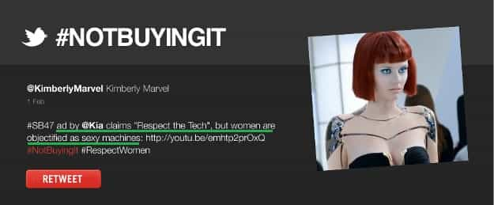

< < < Back
Super Bowl Commercials Aren’t Sexist – Return Of Kings
Every year, the howls about just how “sexist” and “objectifying” and “disrespectful” and “misogynist” Super Bowl commercials are seem to get louder. Despite whatever else they may try to dilute it with, what really seems to get the bellyachers is the sexual nature of these commercials. Nowadays, nothing offends feminists and emasculated men more than any expression of men’s natural sexuality. Threatened by, and uncomfortable around, attractive women—and, by extension, men’s natural desire for them—they do their best to silence and suppress them both. Simply depicting female attractiveness is a crime to them.
This time around, the opposition was organized around an Internet boycott campaign that went by the almost-clever name #NotBuyingIt, complete with its own glossy Internet video, website, and twitter page. The idea was that outraged fatties, prudes, diesel lesbians, “pansexual” female-bodied persons, and lispy white knights from far and wide could narc instances of what they deemed to be “sexist.” The community could then collectively refuse to buy products by the offending companies.
But, like most feminists, the short-haired fatties of #NotBuyingIt made the crime fit the punishment, conveniently ignoring plainly obvious facts in order to push their played-out talking points. They selectively read commercials for their one perceived offense (sexuality), while bypassing other problematic aspects, which were often worse.
Take this Kia Motors commercial, which premiered during last Sunday’s Super Bowl:
Any reasonable man (or woman) who sees this commercial immediately wonders: what if you were to reverse the roles? A woman is disrespecting a showroom car, greasing it up with her hands and kicking the tires. A male android notices the offense and is enraged by it. He punches the woman so hard she leaves a large impression in the wall across the room. He then celebrates his act with the touchdown gesture. Imagine the outrage.
Instead, this was reaction from #NotBuyingIt:

That’s right: all they saw was that an attractive girl was, god forbid, being attractive. Simply putting a hot girl in a commercial is now “objectification,” even if she’s in a maximally dominant position.
Unsurprisingly, they remain conspicuously silent on the commercial’s promotion of brutal violence against men.
Read Next: The Anti-Male Commercial


{kind=link}